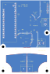

Hardware project · Electric Propulsion and Plasma Lab · Purdue CubeSat Lab
Payload Interface Board
Overview
This project aims to fly a novel pulsed magnetoplasmadynamic thruster in a 6U CubeSat. This ground-test board brings the payload’s pressure, flow and current sensors onto one platform for bench characterization.
Requirements: four measurement paths, a 12 A continuous-current target, separation of the Hall primary from the low-voltage electronics, and a serviceable STM32 interface in a 65 × 95 mm, two-layer PCB.
On the board: a digital pressure sensor and external flow interface share I²C; a Hall sensor measures bidirectional current; a Rogowski integrator conditions changing-current signals. The Nucleo reads the channels and supplies the low-voltage rails.
In use: connect the sensors and Nucleo to the bench setup, acquire timestamped readings, and compare them with calibrated references. Acquisition firmware, calibration and thermal validation remain part of bring-up.
Schematic capture


PCB layout



Design details
Rationale
Acquisition architecture
Digital sensors share an I²C bus. The two current channels reach separate ADC inputs after analog conditioning. Keeping those paths distinct accommodates both slowly varying measurements and pulse diagnostics without pretending that every sensor has the same bandwidth.
Why retain a development module?
The NUCLEO-G431KB supplies the existing STM32 platform, low-voltage rails and programming interface. Retaining it lets the daughterboard concentrate on sensor connections and analog behavior, while the removable module remains serviceable. A custom controller would also require power, programming and firmware integration work. The cost of modularity is board area, header connections and a socket-height constraint.
PA0 reads Hall current and PA1 reads the integrator. The project assigns PB7 to SDA and PA15 to SCL; the fitted Nucleo’s SB2/SB3 routing and firmware pin configuration must agree with those assignments. USB provides the intended bench power/programming connection. Host logging still requires an acquisition application and a configured communication interface.
Power distribution
The pressure sensor, Hall sensor and dual op-amp use 3.3 V. The flow interface defaults to 5 V. C8 and C9 add 10 µF bulk capacitance to those rails, while C1, C2, C3 and C10 provide 100 nF bypassing at the individual loads. Bulk capacitance helps supply local demand; nearby bypass capacitors keep transient return loops short.
The design uses the module’s power system rather than adding a daughterboard regulator. A complete worst-case power budget remains a bring-up item. There is no automatic arbitration between 5 V and the external flow supply, no dedicated on-board data storage, and no independent daughterboard power-protection controller. Calibration and records are intended for firmware or host storage.
Pressure & flow interfaces
U2 · MS5837-02BA21 pressure sensor
The TE sensor, order code 20000979-00, integrates pressure conversion and a digital interface, so this channel needs no separate analog amplifier or ADC input. It is an absolute-pressure device in the 2 bar family. Its range and pressure-port arrangement must match the experiment; it is not a direct substitute for a high-pressure discharge transducer.
C1 bypasses its supply. Firmware must read the calibration PROM, validate its CRC and apply the specified temperature compensation. A response at I²C address 0x76 only establishes communication, not calibrated pressure. The port also affects assembly: residue, coating or cleaning fluid can compromise the sensing interface.
R1 / R2 · one shared I²C bus
Two 4.7 kΩ resistors pull SDA and SCL up to 3.3 V. Sharing the bus saves controller pins and keeps the interface simple. Each asserted line draws about 0.70 mA through its pull-up. The resistance trades rise time against sink current; cable capacitance and any pull-ups inside the external sensor determine whether that choice works with the real harness. The planned starting bus rate is 100 kHz.
J1 / JP1 / J3 · selectable flow-sensor supply
Flow is measured off-board, through a five-position 2.54 mm header. The verification method names the LG16-043D; the design guide still calls for confirmation of the fitted variant, protocol and harness. J1 carries SDA, SCL, selected supply and ground, with pin 5 unconnected. An analog-output flow sensor cannot use that spare pin without a circuit change.
JP1 defaults to a copper connection between pads 1–2, supplying 5 V. Its alternative position uses VEXT from J3. This accommodates a different low-voltage sensor supply without redesigning the interface, but selection is manual: the default bridge must be cut before pads 2–3 are joined. C10 bypasses the selected rail. The board has no level translator; choosing another supply does not change the 3.3 V logic interface.
Hall current sensing
U3 · ACS725KMATR-20AB-T
The Hall path measures current through an internal conductor while separating that conductor electrically from the low-voltage output. Revision C replaces the earlier small-package sensor with the wider ACS725KMA package. Its nominal ±20 A bidirectional range gives measurement headroom around the 12 A continuous design target; its 3.3 V supply and midpoint-centered output fit the controller’s analog domain.
The selected sensitivity is 66 mV/A. At zero current the nominal output is 1.65 V. The package’s typical 0.85 mΩ conductor resistance implies approximately 0.122 W at 12 A using I²R. That calculation excludes PCB copper, terminals, solder joints and temperature-dependent resistance, so it does not establish the board’s thermal performance.
| Primary current | Nominal output | Ideal 12-bit code |
|---|---|---|
| −12 A | 0.858 V | 1065 |
| 0 A | 1.650 V | 2048 |
| +12 A | 2.442 V | 3031 |
These are calculated values, using code ≈ VOUT / 3.3 V × 4096. One code corresponds to about 12.2 mA; that is quantization, not accuracy. Offset, gain, noise and temperature require calibration, and firmware must use the replacement sensor’s sensitivity.
Two filtering stages
C2 supplies local bypassing. C11, a 1 nF C0G capacitor on the sensor’s FILTER pin, gives a nominal internal pole near 94 kHz with the documented typical 1.7 kΩ internal resistance. R7 = 1 kΩ and C6 = 10 nF then form a 15.9 kHz filter at PA0. The resistor also separates the sensor output from ADC sampling transients.
The lower external pole reduces the useful Hall-channel bandwidth. This is appropriate to characterize as a supply-current channel, but it cannot be assumed to reproduce a fast discharge waveform. Neither the sensor range nor a changing ADC reading proves adequate pulse response. Sampling rate, acquisition time and the required measurement bandwidth must be established together.
The series path & isolation boundary
J2’s pins are the entry and exit of one series current path. IP_IN joins U3 pins 1–4; IP_OUT joins pins 5–8. Both pad banks connect directly to broad copper areas. Only this primary path has a designed isolation barrier; the flow, pressure, Rogowski electronics and host remain in the low-voltage domain.
The design record lists a 565 V device-level reinforced working-voltage rating for U3. The proposed 400 V circuit remains provisional, and a component rating does not qualify the populated board, connectors, enclosure or wiring. The layout targets and pending acceptance work are therefore part of the design, not a claimed operating result.
Rogowski integration & bias
Why a second current channel?
A bare Rogowski coil produces a voltage proportional to the rate of change of current, rather than current itself. This makes it useful for changing-current diagnostics, but its output needs integration. U4A, half of the MCP6002T-I/SN dual op-amp, provides that function. Unlike the Hall channel, the coil path cannot measure steady DC.
The single-supply circuit works around a 1.65 V reference so the ADC can observe deviations in either direction. R3 = 100 kΩ sets the input resistance; C4 = 100 nF supplies integrating feedback. R4 = 1 MΩ, in parallel with C4, provides a DC feedback path so offsets do not drive an ideal integrator indefinitely into saturation.
Above the leak pole, within the useful amplifier and coil bandwidth, VOUT − VREF ≈ −M × I / (R3C4), where M is the coil’s mutual inductance. R4 also controls recovery after a pulse. The finite op-amp bandwidth, output swing, noise and offset keep this ideal model from describing every frequency or amplitude.
Why C0G, and why a dual amplifier?
C4 uses a larger 1206 C0G capacitor because its stability directly affects current scaling. A smaller high-permittivity ceramic would make capacitance more dependent on bias and temperature. The 1% input resistor and 5% capacitor already imply roughly ±6% first-order worst-case scale variation before coil and amplifier errors, making calibration essential.
The second amplifier, U4B, buffers the midpoint. Equal 10 kΩ resistors R5 and R6 divide 3.3 V in half; C5 = 1 µF filters the divider. Their 5 kΩ equivalent source resistance gives a nominal 31.8 Hz bias-filter pole, while the divider draws about 165 µA. Buffering prevents signal loading from directly disturbing the divider. Opposing resistor tolerances alone can shift its midpoint by about 16.5 mV.
J4 pin 2 returns the floating coil to this buffered VREF, not ground. The coil’s insulation is a separate requirement; the integrator does not create an isolation barrier. C3 bypasses the op-amp supply. R8 = 1 kΩ and C7 = 1 nF add a nominal 159 kHz ADC input pole, but the full channel bandwidth also depends on the coil and amplifier.
The unresolved gain decision
The actual coil sensitivity is not established in the source design. With an illustrative M = 100 nH, the retained integrator would produce only 120 µV for 12 A—about 0.15 of a nominal 12-bit ADC code. That example is not a prediction for the intended pulse current; it shows why the actual coil, peak current and pulse width must drive the final R3/C4 choice. Gain, clipping, droop, noise and pulse recovery remain validation items.
Layout, mechanics & assembly
The physical design separates the controller and sensor-conditioning area from the primary current conductor. The board grew from 65 × 60 mm to 65 × 95 mm to make room for current copper and the isolation boundary.
| Layout decision | Reason & tradeoff |
|---|---|
| Two copper layers; specified 2 oz outer copper; 1.6 mm FR4 | Broad copper supports the 12 A thermal target without a multilayer stack. Copper weight must be specified in fabrication; current capacity remains a thermal test result. |
| IP_IN / IP_OUT pours on both sides | Stitching vias and all primary pads share the current path. Direct pad connections avoid narrow thermal-relief spokes, but large copper areas increase assembly heating demands. |
| Low-voltage ground kept outside the primary section | Provides the sensor circuitry with a common return while preserving the intended isolation boundary. Bypass placement and analog return routing remain important to noise performance. |
| 24 × 1.5 mm nonplated slot beneath U3 | Lengthens surface paths between primary and low-voltage areas. It is routed on Edge.Cuts and must be recognized as an internal cutout by the fabricator. |
| 7 mm clearance; 8 mm creepage; 2 mm primary-to-edge spacing | Explicit custom rules make the chosen geometry checkable. They are layout targets, not a standards certification or a complete high-voltage acceptance. |
| Four 3.2 mm M3 nonplated holes | Controlled mounting locations with copper keepouts. The lower pair has enlarged keepouts for the nearby primary domain; metal hardware must fit the documented 7 mm diameter envelope. |
| Top-side SMD population | One-sided placement simplifies assembly and inspection. The lab separately fits the Nucleo and connectors, keeping the controller serviceable. |
| Five labeled schematic blocks and named nets | Power, pressure/I²C, flow, Hall and Rogowski paths are easier to trace. Visible reference designators connect the layout to the component register without crowding the silkscreen with every specification. |
| Project-local sensor footprints and exact connector parts | Pin mapping, drill sizes and package geometry follow the selected devices. A similar family name is insufficient for a drop-in substitution. |
Dielectrics, footprints & manufacturing
All eight resistors are 0603, 1%, 0.1 W parts carrying signal or bias current. Reusing values simplifies the assembly population. X7R capacitors serve local bypassing and the Hall ADC filter; X5R serves bulk storage and midpoint filtering. Their effective capacitance can vary with bias. C0G is used for the integrator and the 1 nF filtering parts, where stable capacitance supports a more predictable transfer function.
The assembly package specifies 22 SMD placements: eight resistors, eleven capacitors and three ICs. U1, J1–J4, the copper jumper and mounting features are excluded. Pressure-port handling and IC orientation need an assembly review, and the large primary copper needs adequate solder wetting. The archived fabrication package is a prototype design record; an order or assembled-board result is not established.
Complete component register
Every electrical reference in the Revision C register is included below. The circuit sections explain the value choices and tradeoffs; the exact manufacturer part numbers make the population traceable. H1–H4 are mechanical mounting holes rather than purchased electrical components.
| Reference | Value / device | Selected part | Circuit role |
|---|---|---|---|
| C1 | 100 nF | CC0603KRX7R9BB104 | Pressure supply bypass |
| C2 | 100 nF | CC0603KRX7R9BB104 | Hall supply bypass |
| C3 | 100 nF | CC0603KRX7R9BB104 | Op-amp supply bypass |
| C4 | 100 nF C0G | GRM31C5C1H104JA01L | Stable integration capacitor |
| C5 | 1 µF | CL10A105KB8NNNC | Midpoint divider filter |
| C6 | 10 nF | 0603B103K500NT | Hall ADC shunt filter |
| C7 | 1 nF | C0603C102J5GACTU | Rogowski ADC shunt filter |
| C8 | 10 µF | CL21A106KAYNNNE | 3.3 V bulk decoupling |
| C9 | 10 µF | CL21A106KAYNNNE | 5 V bulk decoupling |
| C10 | 100 nF | CC0603KRX7R9BB104 | Selected flow supply bypass |
| C11 | 1 nF | C0603C102J5GACTU | Hall internal FILTER capacitor |
| J1 | FLOW 1x05 | Exact header pending | External digital flow interface |
| J2 | CURRENT SERIES 12A | 1731721 | Series primary-current terminal |
| J3 | VEXT 2P | 1715721 | External flow supply terminal |
| J4 | ROGOWSKI 2P | 1715721 | Floating coil / VREF terminal |
| JP1 | 5V / VEXT | PCB copper feature | Manual flow supply selector |
| R1 | 4.7 kΩ | 0603WAF4701T5E | I²C SDA pull-up |
| R2 | 4.7 kΩ | 0603WAF4701T5E | I²C SCL pull-up |
| R3 | 100 kΩ | 0603WAF1003T5E | Integrator input resistance |
| R4 | 1 MΩ | 0603WAF1004T5E | Integrator DC feedback / leak |
| R5 | 10 kΩ | 0603WAF1002T5E | Upper midpoint divider |
| R6 | 10 kΩ | 0603WAF1002T5E | Lower midpoint divider |
| R7 | 1 kΩ | 0603WAF1001T5E | Hall ADC series filter |
| R8 | 1 kΩ | 0603WAF1001T5E | Rogowski ADC series filter |
| U1 | NUCLEO-G431KB | NUCLEO-G431KB | Removable controller module |
| U2 | MS5837-02BA21 | MS5837-02BA21 | Absolute pressure measurement |
| U3 | ACS725KMATR-20AB-T | ACS725KMATR-20AB-T | Isolated Hall current measurement |
| U4 | MCP6002T-I/SN | MCP6002T-I/SN | Integrator and midpoint buffer |
Verification & remaining work
As it is right now, this board is prepared for verification after the Critical Design Review. Formal testing on the board has yet to occur.
How the board is intended to be verified
| Measurement | Planned comparison | What it establishes |
|---|---|---|
| Flow and delivered mass | Timed gravimetric collection, with density and timing accounted for | Compare both steady flow and integrated mass. The companion method assigns 8%; no achieved accuracy is reported. |
| Hall current | Independent current reference across several positive and negative operating points | Fit zero and sensitivity; verify residuals on separate data. Test 12 A temperature rise under the intended fixture conditions. |
| Pressure | Traceable absolute-pressure reference within the sensor range | Verify compensation, offset, drift and repeatability. The method assigns 5% to the listed health metrics. |
| Rogowski / pulse diagnostics | Synchronized digitizer and independent current probe | Characterize gain, polarity, bandwidth, clipping and recovery using the actual coil and pulse. |
| Payload input power | P31U telemetry compared with a calibrated power analyzer | The method assigns 1% to this separate power measurement. The daughterboard’s Hall channel is a cross-check, not proof of the allocation. |
| Mission performance | Combine sensor evidence with independent impulse and mission inputs | The documented targets are 2% impulse-bit error and 10% each for specific impulse and efficiency. These are system targets, not board specifications. |